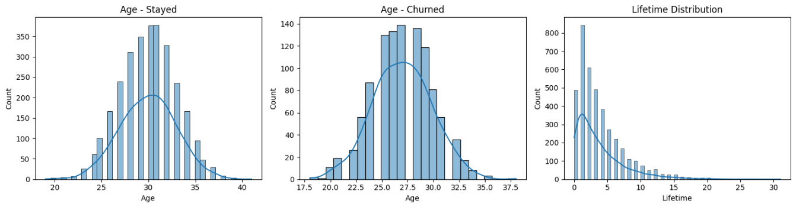

End-to-end data analysis and classification modeling project to identify key drivers of customer churn and improve retention strategies.
The company faced increasing customer churn without clear visibility into the underlying drivers. The objective was to analyze customer behavior and build a predictive model to identify high-risk customers.
• Customer demographic and transactional data • Behavioral features and service usage metrics • Target variable: Churn (Yes/No)
• Data cleaning and preprocessing • Exploratory Data Analysis (EDA) • Feature engineering • Train/Test split • Classification modeling • Model evaluation using performance metrics
Python | Pandas | Scikit-learn | SQL | Matplotlib
